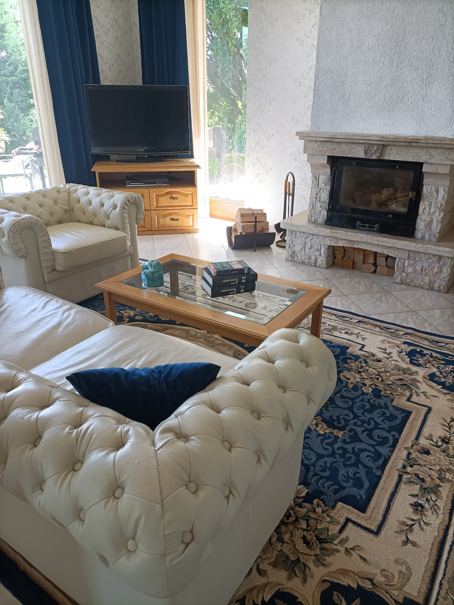

I have been a member of the Budapest Bar Association since 1991 and from later on, the Pest County Bar Association. In addition to my legal practice, I am a university lecturer at the Ludovika University of Public Service. In addition to my academic and teaching career, it has always been important for me to prove myself not only in the “ivory tower” of science but also in the practice of law. Therefore, I have not abandoned the practice of law, and I have been practicing as a lawyer for the past 35 years. As a university lecturer, I initially taught criminal law for four years, then later administrative law and constitutional law. I have been able to make good use of my academic specialisation in political science—with a focus on public administration and economic governance—in public law cases I undertake as a lawyer. However, I have also remained faithful to criminal law. In the scope of my legal activity, I represent my clients (individuals and legal entities) in litigation and in out-of-court proceedings, also, in administrative procedures, offer legal assistance and counselling, draft and countersign contracts and other documents. I provide complete legal representation for my clients in litigation before international courts (European Court of Human Rights in Strasbourg and European Court of Justice in Luxemburg).
I graduated as a doctor of law from the Faculty of Law of the Eötvös Loránd University in 1984 and received my PhD degree in 1997. I qualified as a lawyer in 1991, and since then, I have been a member of the Budapest Bar Association and from later on, the Pest County Bar Association. My experience as a lawyer has also helped me to develop my teaching and research activities.
After graduating from law school, I taught at the Department of Criminal Justice at the Faculty of Law of the University of Miskolc as an assistant professor until 1988, and since then, I have been teaching at the Faculty of Public Governance and International Studies of the Ludovika University of Public Service and its predecessors, the College of Public Administration and the Corvinus University of Budapest. In 2009, I obtained a habilitated doctoral title at the Faculty of Law of the University of Pécs, and in 2015, I was appointed professor at the Ludovika University of Public Service.
In the 1990s, I took part in study visits to Strasbourg, Florence, and Salzburg, focusing on comparative law, European integration, and the American public law system. In 1998, I was a Fulbright Visiting Scholar at the Virginia Polytechnic Institute and State University in the United States, where I taught and researched legal and organisational issues in privatisation and healthcare.
I have also been involved in research at several American and European institutions over the last three decades. The most important of these have been as follows: American Society for Public Administration, American National Forum Foundation, The Network of Institutes and Schools of Public Administration in Central and Eastern Europe, Open Society Institute: Local Government and Public Service Initiative, Constitutional and Legislative Policy, Commission of the European Communities. This research has focused on competition supervision in the public sector, the organisation of public services, welfare reforms, privatisation, liberalisation, and public management.
In 1997, I was a legal adviser to the World Bank Project Management Unit in Hungary, working on the Hungarian healthcare reform attempt. In 1999, in the Ministry of Health, I was involved in the preparation of legislation on the privatisation of primary healthcare and then specialised care. In 2013, I worked as an academic adviser at the NATO COE-DAT Ankara office, dealing with international legal issues of migration and terrorism.
As a lawyer, I have received assignments from the Hungarian Medical Chamber, the Chamber of Pharmacists, the Municipality of Budapest, the Municipality of Pest County, the Ministry of Social and Family Affairs, Telenor PLC, the Corvinus University Foundation, in legislative matters and in the development of the legal background of e-Government. I was assigned by public authorities to act as a legal representative in proceedings before the Constitutional Court in connection with the constitutional supervision of legislation. I have been involved as a researcher in the legal deregulation programme organised by the Prime Minister’s Office and in the State Audit Office of Hungary’s research on state corruption.
I was an elected member of the Pest County Election Committee in 2006 and an alternate member of the National Election Committee between 2018 and 2022. I am the chair of the European Union Law Department of the Hungarian Lawyers Association. I work with several Hungarian and international academic law journals as a member of the editorial board, acting as a lector.
If you have any questions, contact the contact details below.